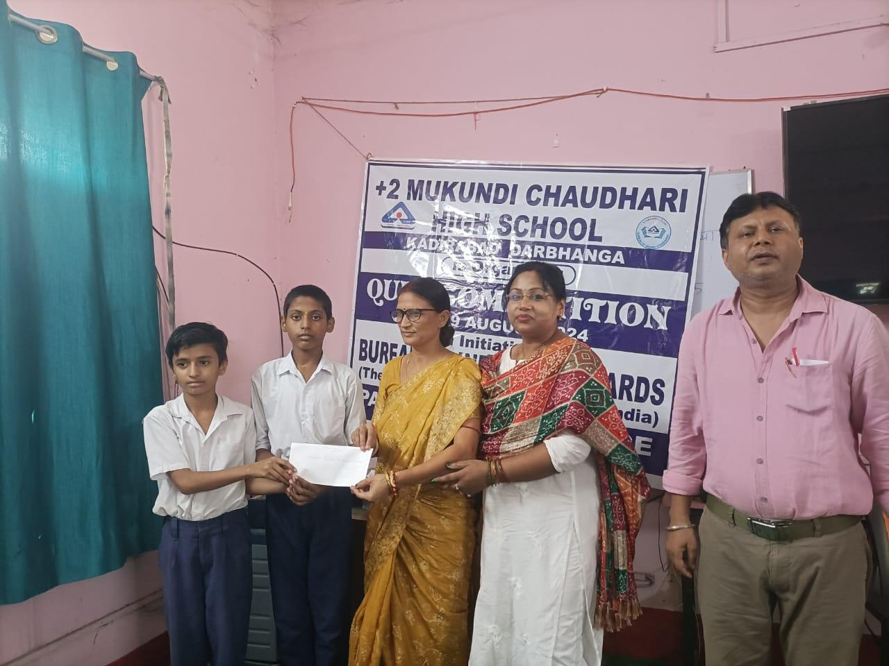
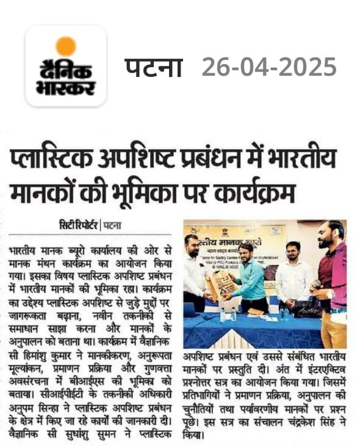

Livelihoods
Livelihoods
Skill Development & SHG Empowerment
Market-relevant trades for youth, and financial literacy that turns Self-Help Groups from saving circles into thriving micro-enterprises — beneficiaries become breadwinners.
Learn moreSince 2006, Sarv Samarpit Sanstha has walked alongside the villages of Bihar and Jharkhand — turning awareness into skill, skill into livelihood, and livelihood into dignity.


Service is our resolve — a promise kept in every village we serve.
Every figure below is a doorstep we've knocked on, a hand we've held, a skill that stayed behind after we left.
We don't deliver charity — we build capacity. Each program leaves behind skills, systems and confidence that outlast our presence.
Livelihoods
Market-relevant trades for youth, and financial literacy that turns Self-Help Groups from saving circles into thriving micro-enterprises — beneficiaries become breadwinners.
Learn more Governance
Governance
Sensitization programs that equip Mukhiyas, Sarpanchs and PRI members with the knowledge to be effective change-makers — because strong villages start with strong local leaders.
Learn more Consumer rights
Consumer rights
From hallmark literacy to the BIS CARE app, we help every consumer — down to the remotest hamlet — verify what they buy and stand protected from sub-standard goods.
Learn more
WASH
Aligned with the Swachh Bharat Mission, we work on toilets, waste management and — most importantly — mindsets, so that swachhata becomes a way of life, not a mandate.
Learn more
"Resources existed. Policies existed. What was missing at the last mile was awareness and skill. So we decided to carry both — on foot, village by village."
— Rakesh Ranjan, Founding Member
Founded on 15 November 2006 — the foundation day of Jharkhand — SSS began as a small group of visionaries with a resolute mission: to bridge the gap between policy and people.
Read our full storyWhether you give an hour, a skill or a rupee — you become part of a chain of dedication that reaches the very last doorstep.
Fund school kits, training days and sanitation drives. Every rupee is tracked and reported.
Give nowJoin awareness walks, teach at quiz camps or mentor an SHG. Time is the rarest donation.
Sign upInstitutions, CSR teams and agencies — co-create programs with a partner trusted since 2006.
Start a conversationAdopt an entire drive — a village sanitation month or a district-wide quality-awareness week.
See campaignsYour gift doesn't disappear into overheads. It becomes a school quiz prize in Darbhanga, a hygiene kit in Vaishali, a skill certificate in Hajipur.
Choose an amount or enter your own.
SSL-encrypted · Instant receipt · No hidden charges
From district newspapers to village notice boards — glimpses of the work as it happens.

Our Manak Manthan program on plastic waste management drew industry participants and an energetic interactive Q&A on certification and compliance.
View coverage
Teachers and students of Anugrah Inter School saw quality standards in action — hard hats on, curiosity switched fully on.
See photos
Students of +2 Mukundi Chaudhari High School competed, learned and took home prizes — and a new habit of asking "is it certified?"
Read moreWe work shoulder-to-shoulder with public institutions and community bodies who share our belief in quality and dignity for all.
Write to us — a real person from the field team replies within two working days.